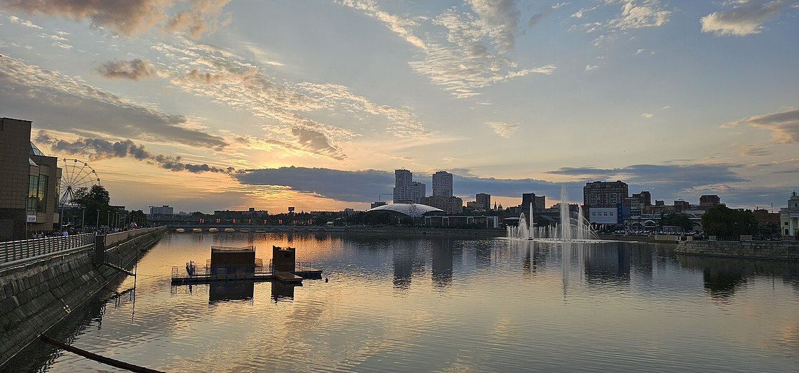
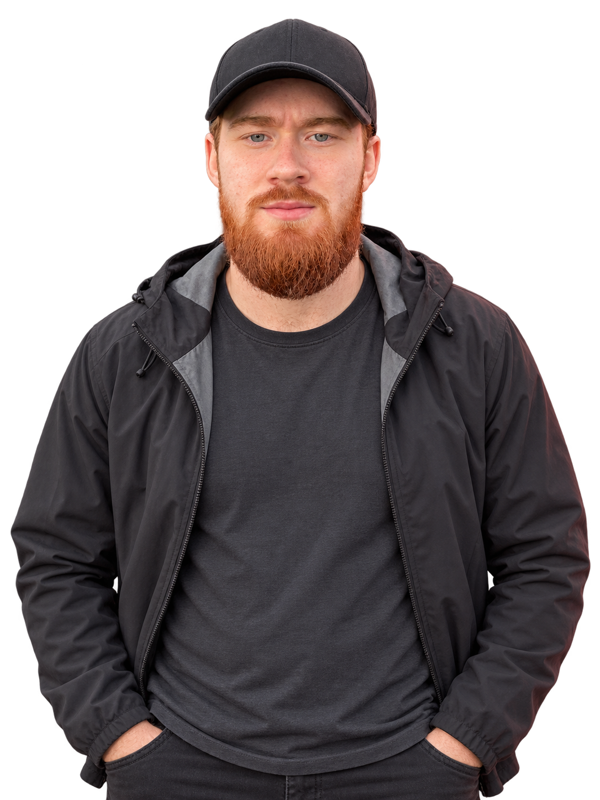
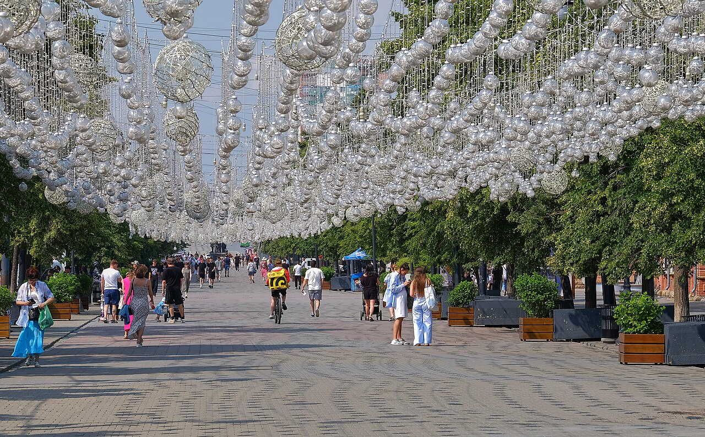
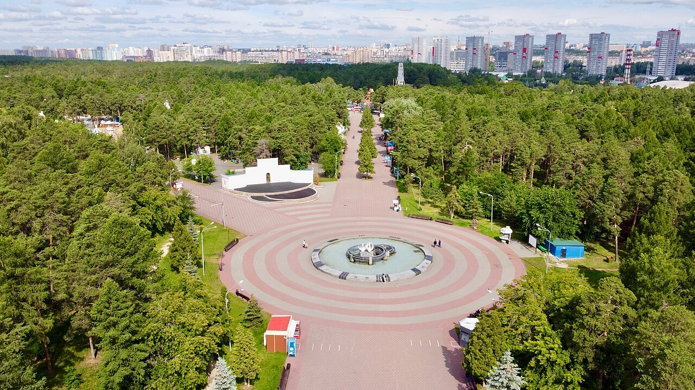

В городе
Прогулка с камерой по знакомым улицам или новая точка на карте. Ты выбираешь настроение — вместе найдём подходящий свет и фон.
Любая локация Челябинска

Привет, я
Фотограф / Челябинск
Твоя история — в любой точке города.
Приеду на выбранную локацию
или встретимся в студии.
Выезд по всему Челябинску
Не обязательно уезжать далеко за хорошим кадром. Любимая улица, набережная или тихий парк — выберем место, в котором тебе комфортно.
Вода, отражения и вечерний свет.

Ритм улицы и характер города.

Больше воздуха. Меньше суеты.
Это только ориентиры. Приеду на любую выбранную локацию в Челябинске.
Городские фотографии: авторы и лицензииБез привязки к одному фону.
С вниманием к тебе.
Прогулка с камерой по знакомым улицам или новая точка на карте. Ты выбираешь настроение — вместе найдём подходящий свет и фон.
Любая локация ЧелябинскаКогда хочется спокойной обстановки, лаконичного фона или определённого света. Подберём студию под идею и заранее обсудим её аренду.
Пространство под твою идеюЕсть место, образ или референс, который давно хочется повторить? Покажи его — обсудим, как превратить задумку в съёмку.
Начнём с разговораНе нужно приходить с готовым сценарием. Достаточно желания сохранить этот момент своей жизни.
Расскажи, какую съёмку хочешь. Можно начать с пары слов или прислать понравившийся референс.
Город или студия, настроение, образ и удобная дата. Стоимость и детали согласуем до съёмки.
На месте найдём свет, попробуем разные ракурсы и дадим истории сложиться в своём темпе.
Да. Приеду на выбранную точку в пределах Челябинска или встретимся в студии. Перед съёмкой обсудим, какой там свет и подходит ли место под задумку.
Это не обязательное условие. Начнём спокойно, попробуем простые движения и найдём ракурсы, в которых тебе комфортно.
Напиши об идее, месте и желаемом формате — обсудим стоимость и объём съёмки. Если выбираем студию, её аренду также согласуем заранее.
Например: «Привет! Хочу съёмку на набережной» или «Давай обсудим портрет в студии». Если уже есть дата или референсы — присылай их тоже.
Есть идея? Или пока только желание
оказаться по другую сторону камеры?
Давай обсудим.